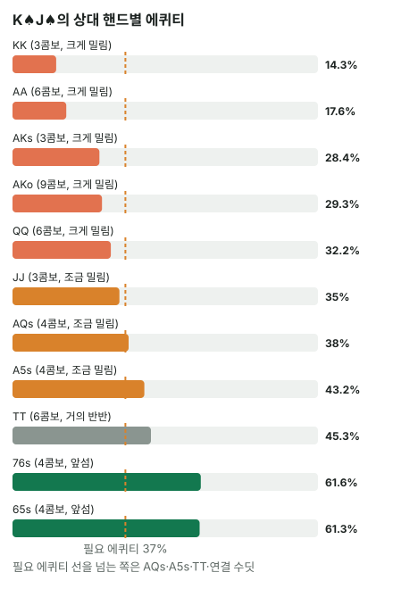

안녕하세요. A13에서는 3벳을 하는 쪽을, A15에서는 3벳이 이득이 되는 본전 폴드율을 봤죠.
오늘은 자리를 바꿔 3벳을 맞은 오픈한 쪽이에요. 버튼에서 K♠J♠로 오픈했는데 SB가 3벳했어요. 콜·폴드·4벳 세 길을 하나씩 숫자로 따져 볼게요.
이 글에서 배울 것
- 3벳을 맞았을 때 콜은 "에퀴티 vs 필요 에퀴티", 4벳은 "상대 폴드율 vs 본전 폴드율"로 따로 재는 이유
- K♠J♠ 같은 예쁜 핸드가 3벳 레인지 상대로 왜 생각보다 약한지: 클래스별 에퀴티를 콤보로 묶어 보기
- 4벳의 본전 폴드율을 5벳·콜 두 갈래로 나눠 직접 계산하는 법
오늘의 핸드
Hero (BTN · 100BB)


프리플랍
Hero(BTN) 2.5BB 오픈 → 상대(SB) 11BB 3벳 → BB 폴드 → Hero는?
지금 팟 11 + 2.5 + 1 = 14.5BB. 콜하려면 8.5BB를 더 내요. SB의 블라인드 0.5BB는 3벳 11BB 안에 이미 들어 있어서 따로 더하지 않아요.
말 두 개만 먼저 정할게요. 4벳은 3벳에 다시 하는 레이즈, 5벳은 그 4벳에 또 하는 레이즈예요(오늘은 5벳이면 올인).
결론부터 말하면, 오늘 가정한 상대에게는 콜 > 폴드 > 4벳 순서예요. 콜은 아슬아슬하게 필요 에퀴티를 넘고, 4벳은 상대가 접는 비율이 모자라요.
남은 베팅이 있어 실제 결과는 달라질 수 있어요. 그래서 오늘은 금액 대신 콜은 에퀴티 vs 필요 에퀴티, 4벳은 상대 폴드율 vs 본전 폴드율로 판정해요.
1단계. 이미 낸 돈은 세 길이 똑같아요
오픈한 2.5BB는 이미 내 돈이 아니에요
폴드하면 오픈한 2.5BB를 잃어요. 그런데 콜해도, 4벳해도 그 2.5BB는 이미 팟에 들어가 있어요. 세 길 모두에서 똑같이 사라진 돈이라, 비교할 때는 지금부터 새로 내는 돈만 세요.
그래서 폴드를 0BB 기준점으로 두고, 콜과 4벳이 이 기준점보다 나은지를 따로 재요.
두 길의 질문이 달라요
- 콜: 8.5BB를 내고 팟을 같이 가져갈 몫을 사요. 질문은 "내 에퀴티가 값을 하나?"
- 4벳: 상대를 접게 해서 지금 팟을 가져오는 게 주된 목적이에요. 질문은 "상대가 충분히 접나?"
이게 무슨 뜻이냐면, 같은 핸드라도 콜은 핸드 힘으로, 4벳은 상대 레인지의 모양으로 판정한다는 거예요.
2단계. 콜: 필요 에퀴티와 K♠J♠의 실제 에퀴티
필요 에퀴티
필요 에퀴티 = 8.5 ÷ (14.5 + 8.5) = 8.5 ÷ 23 = 약 36.96%
콜한 뒤 팟 23BB 중 내가 낸 8.5BB만큼은 가져와야 본전이라는 뜻이에요.
상대 3벳 레인지 (가정 레인지)
SB의 3벳 레인지를 TT+, AQs+, AKo, A5s-A2s, 76s, 65s로 가정해요(솔버 결과 아님). Hero의 K♠·J♠를 지우면 64콤보예요. KK는 3콤보, AK는 12콤보로 줄어요.
클래스별로 묶어 보기
이 레인지 상대 K♠J♠의 에퀴티는 약 37.54%예요. 프리플랍이라 보드 다섯 장을 무작위로 여러 번 깔아 보고 이긴 비율을 센 값(몬테카를로)이에요. 이 숫자가 어디서 나오는지 클래스별로 보면 이래요.
| 묶음 | 핸드(콤보) | K♠J♠ 에퀴티 |
|---|---|---|
| 크게 밀림 | AA(6), KK(3), AKo(9), AKs(3), QQ(6) | 약 14.29% ~ 약 32.2% |
| 조금 밀림 | JJ(3), AQs(4), A5s-A2s(각 4) | 약 35% ~ 약 43.5% |
| 거의 반반 | TT(6) | 약 45.31% |
| 앞섬 | 76s(4), 65s(4) | 약 61.64%, 약 61.27% |

레인지 에퀴티는 이 클래스 에퀴티를 콤보 수로 가중 평균한 값이에요. 크게 밀리는 묶음이 27콤보로 레인지의 큰 몫인데, 앞서는 묶음은 76s·65s 합쳐 4 + 4 = 8뿐이에요.
이게 무슨 뜻이냐면, K♠J♠의 37.54%는 "반쯤 이기는 핸드"가 아니라 많이 지는 상대 27콤보와 이기는 상대 8콤보를 섞은 평균이라는 거예요.
블러프 3벳에도 앞서지 못해요
눈여겨볼 건 A5s-A2s예요. 상대 입장에선 블러프 3벳이지만, K♠J♠ 상대로는 A 하이가 K 하이보다 높아서 K♠J♠가 약 43%로 오히려 뒤져요.
블러프가 섞였다고 해서 그 블러프가 우리 핸드보다 약하다는 뜻은 아니에요.
판정
에퀴티 약 37.54% > 필요 에퀴티 약 36.96%라 콜이 폴드보다 나아요. 다만 차이가 아주 작아서, 상대 레인지가 조금만 달라져도 뒤집힐 수 있는 콜이에요.
3단계. 4벳: 상대는 셋으로 갈려요
25BB 4벳에 대한 상대 대응 (가정)
| 상대 대응 | 핸드 | 콤보 | 비율 |
|---|---|---|---|
| 5벳(올인) | QQ+, AK | 27 | 약 42.19% |
| 콜 | JJ, TT, AQs | 13 | 약 20.31% |
| 폴드 | A5s-A2s, 76s, 65s | 24 | 37.5% |
5벳 올인을 맞으면 Hero는 접는다고 볼게요. 4벳으로 새로 거는 돈은 25 − 2.5 = 22.5BB예요.
안 접는 판은 두 갈래
- 5벳(27콤보): Hero가 접어서 22.5BB를 다 잃어요
- 콜(13콤보): 팟이 51BB가 되고, 리버까지 체크로 간다고 단순화해요. JJ·TT·AQs 상대로 K♠J♠의 에퀴티는 약 40.68%라, 51BB 중 약 20.75BB를 돌려받아 약 1.75BB만 잃어요
본전 폴드율
A15와 같은 틀을 여기서 끝까지 따라가 볼게요.
① 안 접을 때 평균으로 잃는 돈. 안 접는 핸드는 27 + 13 = 40이에요. 그중 5벳 27콤보는 22.5BB를, 콜 13콤보는 약 1.75BB를 잃어요.
평균 손실 = (27 × 22.5 + 13 × 1.75) ÷ 40 = 약 15.76BB
② 본전이 되는 폴드율. 접는 판에서 가져오는 지금 팟과, 안 접는 판의 평균 손실 ①이 균형을 이루는 곳이 본전이에요. 폴드율 × 14.5와 (1 − 폴드율) × 15.76을 같게 놓고 풀면 이렇게 돼요.
본전 폴드율 = 15.76 ÷ (15.76 + 14.5) = 약 52.08%
콜 받는 판이 하나도 없다면 ①이 그냥 22.5BB라 22.5 ÷ (22.5 + 14.5) = 약 60.81%예요. 이게 순수 블러프의 알파예요.
| 폴드율 | |
|---|---|
| 안 접으면 22.5BB를 다 잃는다고 칠 때(순수 블러프의 알파) | 약 60.81% |
| 본전 폴드율(콜 받을 때 돌려받는 몫 반영) | 약 52.08% |
| 오늘 상대 폴드율 | 37.5% |
비유: 보증금 걸린 흥정
4벳은 보증금을 걸고 하는 흥정과 비슷해요. 상대가 물러서면(폴드) 팟을 가져오고, 상대가 받아치면(5벳) 보증금 22.5BB를 그대로 날려요. 상대가 그냥 받아 주면(콜) 보증금 대부분은 돌려받아요.
그래서 받아치는 상대가 많을수록 흥정이 비싸져요. 오늘 상대는 37.5%만 접어서 본전 약 52.08%에 한참 못 미쳐요.
왜 그럴까: 오늘 3벳 레인지는 위가 두껍고, 블러프도 A를 들고 있어요
3벳 레인지의 모양
오늘 가정한 3벳 레인지는 64콤보 중 40콤보가 TT 이상 페어와 AK·AQs예요. 블러프 자리 24콤보 중 16콤보도 A를 든 수딧 핸드예요. K♠J♠는 이 둘 모두에 밀려서, 앞서는 상대는 76s·65s뿐이에요.
블러프를 무엇으로 고르느냐는 사람마다 달라요. 블러프 자리에 K♠J♠보다 낮은 카드만 든 핸드를 쓰는 상대라면 그림이 달라져요.
콜이 그래도 살아남는 이유
그래도 콜이 되는 건 필요 에퀴티가 낮아서예요. 이미 오픈한 2.5BB와 상대 3벳 11BB가 팟에 있어서, 8.5BB만 내면 23BB 팟에 참여할 수 있죠.
4벳이 안 되는 이유
4벳은 상대가 접어야 이득인데, 오늘 레인지에서 접는 건 블러프 24콤보뿐이에요. 3벳을 하는 핸드 자체가 이미 강한 쪽으로 걸러져 있어서, 4벳으로 한 번 더 거르면 남는 건 대부분 맞서는 핸드예요.
자주 하는 실수
실수 1. "KJs는 좋은 핸드니까 3벳에도 편하게 콜" 핸드 이름만 보고 콜하는 경우예요. 오늘 K♠J♠는 레인지 상대 약 37.54%로, 필요 에퀴티 약 36.96%를 겨우 넘었어요. 크게 밀리는 묶음이 27콤보라서죠. 대신 상대 3벳 레인지를 묶음별로 나눠 내 핸드가 어디서 밀리는지 먼저 봐요.
실수 2. "블러프가 섞였으니 내 핸드가 앞선다" 상대 레인지에 블러프가 있으면 콜이 쉬워진다고 보는 경우예요. 오늘 블러프 자리 16콤보가 A를 든 핸드라 K♠J♠가 오히려 뒤졌어요. 대신 그 블러프가 우리 핸드보다 높은 카드를 들었는지까지 확인해요.
실수 3. 4벳 판정에 순수 블러프 알파만 쓰기 4벳을 "22.5BB를 걸었으니 60.81%는 접어야"로만 보는 경우예요. 콜을 받는 판에서는 돈 대부분을 돌려받으니, 진짜 기준은 약 52.08%로 더 낮아요. 대신 안 접는 핸드를 5벳과 콜로 나눠 평균으로 잃는 돈을 세요.
"37.54%면 거의 본전인데, 그냥 접어도 되지 않아요?"
좋은 질문이에요. 숫자로는 아슬아슬하게 콜이에요. 그리고 계산은 리버까지 에퀴티만큼 다 가져간다는 단순화예요.
이 콜을 받쳐 줄 수 있는 건 포지션이에요. 버튼은 플랍·턴·리버에서 늘 나중에 행동해서, 상대 행동을 보고 정할 수 있어요. 얼마나 더 가져가는지는 오늘 숫자로 재지 않았지만, 같은 핸드를 포지션 없이 콜해야 하는 자리라면 이 정도 차이로는 접는 쪽이 나을 수 있어요.
숫자가 뒤집히는 지점
콜의 기준은 K♠J♠ 에퀴티와 필요 에퀴티 약 36.96%의 차이예요. 레인지에 더해지거나 빠지는 핸드가 K♠J♠보다 앞서는 핸드인지 뒤지는 핸드인지에 따라 에퀴티가 움직이고, 3벳 크기가 바뀌면 필요 에퀴티도 움직여요.
4벳의 기준은 상대 폴드율과 본전 폴드율의 차이예요. 상대 레인지가 바뀌면 두 숫자 중 어느 쪽이 움직이는지 ①·② 식으로 따져 봐야 해요.
선생님의 한마디
3벳을 맞으면 이 순서로 떠올려요.
- 지금부터 낼 돈으로 필요 에퀴티를 구하고, 상대 3벳 레인지를 크게 밀림 / 비슷 / 앞섬으로 나눠요
- 4벳을 생각한다면 상대 레인지를 5벳 / 콜 / 폴드로 다시 나눠 본전 폴드율을 구해요
- 콜이 아슬아슬하면 포지션이 있는지로 마지막을 정해요
연습 문제
학습툴 에퀴티 계산기에는 레인지 입력이 없어서, 핸드 대 핸드(예: K♠J♠ vs A♥5♥)로 클래스 하나씩 확인해 보세요. 레인지 에퀴티는 블로그에서 직접 계산한 값이에요.
문제 1. 같은 SB, 같은 3벳 레인지인데 이번엔 3벳을 14BB로 크게 했어요. 콜하려면 11.5BB를 더 내야 해요. K♠J♠로 콜할까요?
정답 보기
팟은 14 + 2.5 + 1 = 17.5BB, 필요 에퀴티 = 11.5 ÷ (17.5 + 11.5) = 11.5 ÷ 29 = 약 39.66%. 레인지가 같으니 K♠J♠ 에퀴티는 그대로 약 37.54% < 약 39.66% → 폴드.
핸드도, 상대 레인지도 그대로인데 3벳 크기만으로 판정이 뒤집혔어요. 오늘 콜이 그만큼 얇은 콜이었다는 뜻이에요.
문제 2. 이번 SB는 오늘 레인지에 K9s, Q9s, J9s, T8s, 97s, 86s를 블러프로 더 섞어 3벳해요. 이 핸드들은 25BB 4벳에 모두 접고, 5벳·콜 핸드는 오늘과 같아요. 4벳이 폴드보다 나아질까요? 본전 폴드율은 바뀔까요?
정답 보기
더해진 블러프는 K9s 3(K♠가 Hero 손), Q9s 4, J9s 3(J♠가 Hero 손), T8s 4, 97s 4, 86s 4, 합쳐서 3 + 4 + 3 + 4 + 4 + 4 = 22예요. 레인지는 86콤보, 폴드는 24 + 22 = 46콤보라 상대 폴드율은 약 53.49%예요.
본전 폴드율은 약 52.08% 그대로예요. 안 접는 핸드(5벳 27 + 콜 13)가 오늘과 똑같아서, 안 접을 때 평균으로 잃는 돈이 안 바뀌거든요. → 약 53.49% > 약 52.08%라 4벳이 폴드보다 아주 조금 나아져요.
참고로 이 레인지 상대 K♠J♠의 콜 에퀴티는 약 44.64%로 필요 에퀴티를 넉넉히 넘어서 콜도 폴드보다 나아요. 콜과 4벳 중 어느 쪽이 더 나은지는 플랍 뒤 플레이까지 봐야 해서, 오늘 방법으로는 둘 다 폴드보다 낫다는 데까지만 말할 수 있어요.
핵심 정리
- 3벳을 맞으면 이미 낸 오픈 금액은 빼고, 폴드를 0 기준으로 콜과 4벳을 따로 재요
- 콜은 레인지 에퀴티 vs 필요 에퀴티. 레인지 에퀴티는 클래스 에퀴티를 콤보 수로 가중 평균한 값이에요
- 오늘처럼 큰 페어·AK가 두껍고 블러프도 A를 든 3벳 레인지에서는, K 하이 핸드가 생각보다 많이 밀려요
- 4벳의 본전 폴드율 = 안 접을 때 평균 손실 ÷ (그 손실 + 지금 팟). 5벳을 맞는 판이 많을수록 올라가요
정리하며
오늘은 버튼 K♠J♠가 SB 11BB 3벳을 맞은 장면에서 세 길을 따져 봤어요. 콜은 약 37.54% 대 약 36.96%로 아슬아슬하게 폴드보다 나았고, 4벳은 상대 폴드율 37.5%가 본전 약 52.08%에 못 미쳤죠. 내 핸드가 예뻐 보여도 3벳 레인지를 묶음별로 나눠 보면 어디서 밀리는지가 보여요.
다음 글 A32에서는 프리플랍을 떠나 플랍으로 가요. BB에서 1/3 c-bet을 맞았을 때 MDF만큼 지켜야 하는지, 오늘처럼 상대 레인지를 콤보로 세어 따져 봐요.
AI 작성 · 숫자는 계산 검증 (콤보는 하나씩 셈, 에퀴티는 프리플랍 몬테카를로) · 가정 레인지 기준 (솔버 결과 아님) · 콜은 이번 한 번의 결정 기준 · 4벳 콜 받으면 리버까지 체크로 단순화